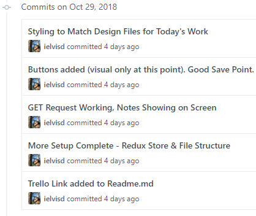
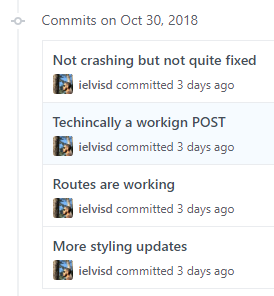
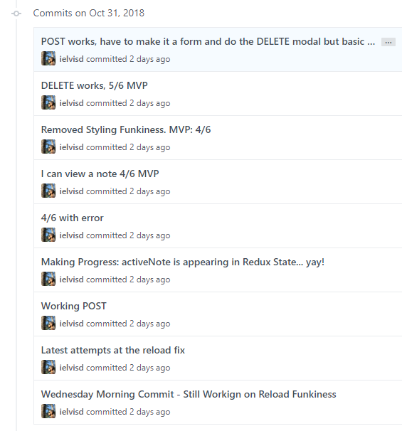
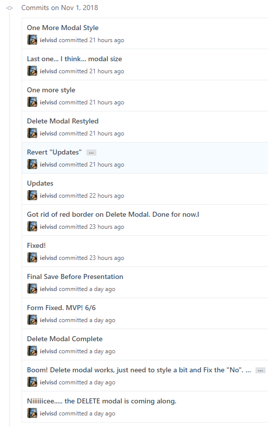

Writing this blog is has been a great way for me to either prepare for a sprint (I'll start writing Wednesday or Thursday) or review what I've just learned (I'll start writing Thursday or Friday). This week was the latter, and I definitely need it. We started the back-end portion of the curriculum which means we started to learn about what happens on the server side of the client-server relationship. It was a bit like learning how a magician does his tricks. For our sprint this week we built an API (Application Programming Interface) that performs CRUD (CREATE, READ, UPDATE, DELETE) operations on a pre-built data access layer. Lambda
School - Full Stack Web Development Core
Day 1: Project Setup & Getting the Data
Having been through a project week already while attending LambdaSchool I was much better prepared this go around because I kind of knew what to expect going in. The project was a to-do notes app that we had to create using React given some design files which were just visuals for what the app should look like. We worked on the project from Monday to Thursday at 2pm at which point some of our cohort presented to the group and that was followed by a smaller group presentation with your project manager. I had setup my Trello board the previous night and had an idea for what MVP looked like. The app needed to fetch notes from a server, display them, display a single note, edit a note, and delete a post. Using Redux was a "stretch goal" and thus not required but I felt comfortable with it from the previous week and it seemed like a logical choice for this app, I cleared that with my Project Manager and got underway.

The above image is from my Github account and shows the "commits" or saves that I did throughout the day. Day 1 was pretty smooth. I wanted to start easy and not overwhelm myself by trying to implement all the MVP features at once so I focused on getting my notes to appear using a POST and doing the styling for the main portions. I was feeling good about my progress after day 1 and was at 2/6 on the MVP list.
Day 2: Posting a Note & Reload Issues Emerge
I started to run into issues that would last up until Thursday morning when it all came together. I focused on getting a POST request to work and was having trouble getting my page to render all the notes after using a POST request without doing a hard reload of the site. I tried lots of different things and at the end of the day I decided that at least it was working and that maybe if I focused on implementing some of the other MVP features I would fix this on time. This is when I started to get a working Route implemented which got me to look into WithRouter which solved my reload issue. Well, that and calling another GET request after my POST request in the POST action. I started to wrap my connect with a WithRouter function from my middleware and that moved my Router methods from the Context area of my React tools to my Props. If that made no sense to you don't worry, I basically fixed my reload issue which gave me confidence going into day 3. If I had a working POST method, then PUT and DELETE weren't far behind.

I was at 3/6 MVP and feeling okay about the project and the week so far. For some reason I thought we had until Friday for this project and something clicked on this night that the project was actually due Thursday! I still thought I could wrap MVP up by Wednesday night so I wasn't too worried.
Day 3: WithRouter Saves the Day MVP a Day Away
Wednesday was Halloween and also the the day I spent the most time with this project. It was quite spooky. I spent most of the day coding away and by the end of the night I had gotten MVP with some quirks and styling that didn't feel quite right. I definitely was not happy with my product that night but I had the following day to change my simple inputs that were placeholders for a full form and get my delete modal finished which is what I needed to feel satisfied with my project. I was feeling awesome about being able to problem solve and make progress every single day.

Even though I was at 6/6 on the MVP list I was not complete in my head until I had a working modal and a form with multi-line text and not just 2 inputs on a screen. 1 day to go.
Day 4: Demo Day - Lambda Notes - FSW14
The delete modal was a little tricker than I thought but since I had most of the morning to focus on it I got that and my form conversion done right at around 1:30pm. It was so cool to see something that you created come to life and work as expected. Sure there are things I could improve but this was mine and it worked =) At 2pm we all met to watch some of our classmates present. Awesome stuff. We have some very talented individuals in my cohort who did some really cool things with their projects. One of the major differences from this go around to last project week was that this time my reaction was "That's awesome, I can see how they did that and can't wait to implement that on my next project." instead of "Wow, that's so awesome, I have no idea how they did and I'll never be that good".

At the end of the day I presented a 6/6 MVP project to my group which used Redux (1 stretch goal) and I am hosting on Github Pages here: Front End Project - Lambda Notes
Such a fun week. I learned so much and am so lucky to have such an awesome group of people around me. I could not have pulled off this project without the awesome instructors, project managers and my fellow FSW14 cohort at LambdaSchool. Even though we've only known each other for 10 weeks it truly feels like a family. Which reminds me that this was also our last week with Dustin Myers who was a great instructor and am thankful for the time he spent with our cohort. As a final note my project was initially built out of 2000px x 2000px design files which is why the app seems huge and I didn't have time to optimize it for smaller screens or anything like that since I spent so much time getting it to work and display correctly at this size in the first place. Also, I have to go back into to update some of the routes which is the notes don't show up until you hit the "view notes" button and why it crashes on a hard reload (these 2 are fine in the test environment). There's plenty more I would improve but I'm happy what what I got. =) Next week we start a 5-week back-end section and that wraps up the Web Development portion of the FSW14 Curriculum. Going by quick!